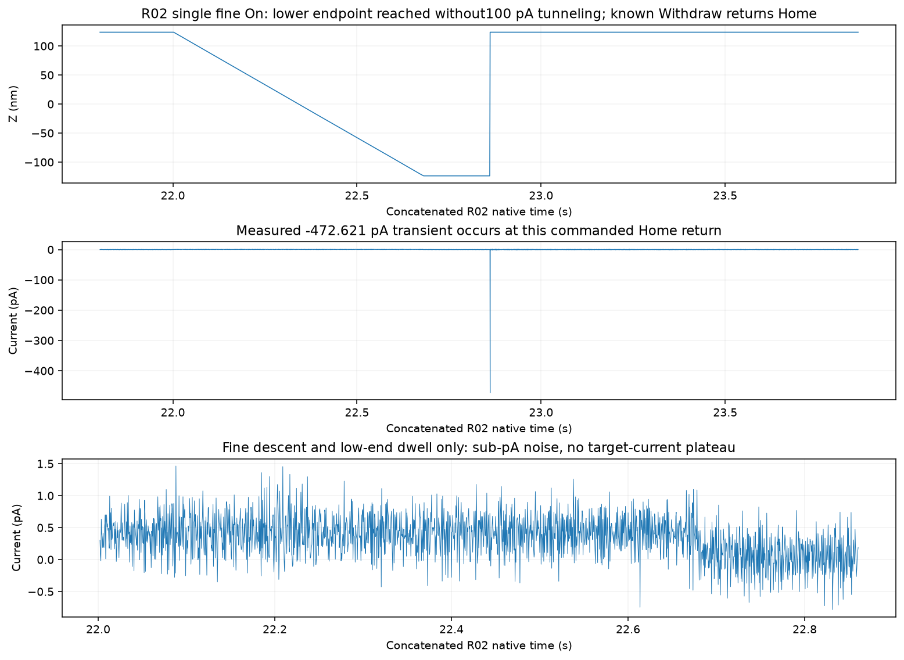
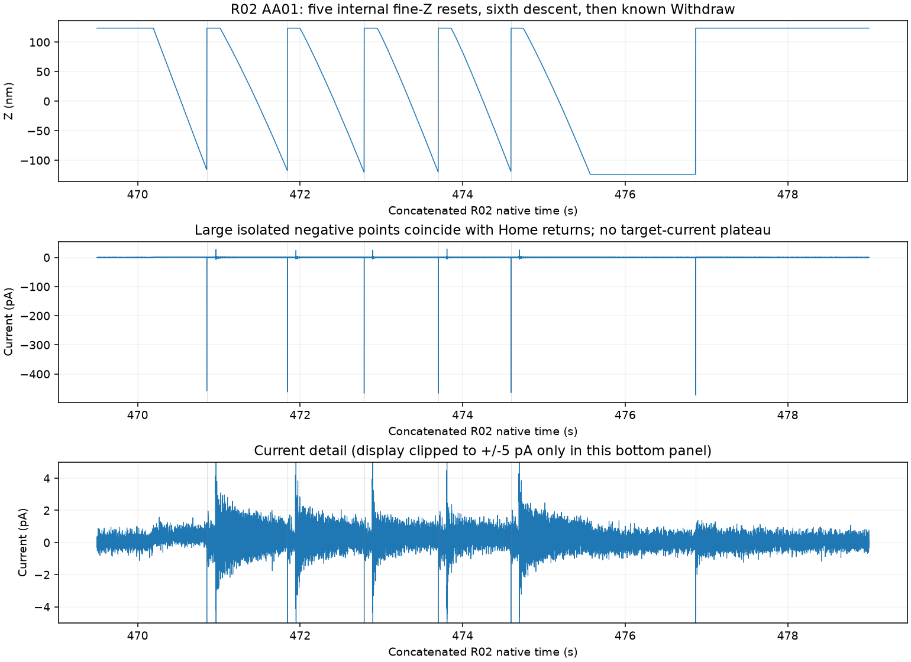
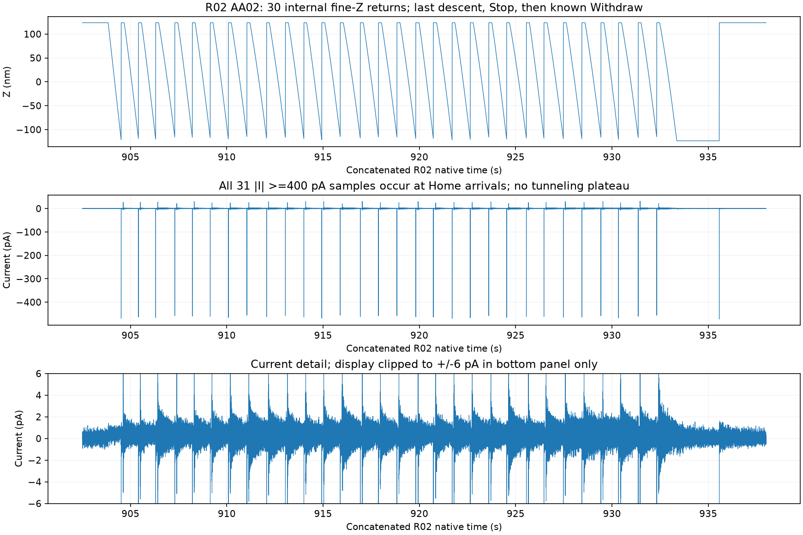

R02 接近恢复尝试：未建立隧穿，已回 Home
历史截止：2026-11-02 23:58:31（Asia/Shanghai）独立停止确认；报告于 2026-11-03 整理。此页不是实时仪器状态。
Fine On、5 s Safe AA、30 s Safe AA 均未出现 100 pA 隧穿平台。两次 AA 均已知 Stop，并经 AutoOff 与 Withdraw/Home 读回确认。R02 没有新增扫描、诱导、脉冲、整形或修复结果。
既有完整尝试进度保持 1/5，尚余 4；已验证成功闭环仍为 0。本段不新增完成计数，也不重判旧图。
实际执行与结果
| 尝试 | 主机开始 → outcome（本地时） | 范围 | 结果 |
|---|
| Fine On | 23:39:16.979 → 23:39:21.214 | 细 Z 到下限 | 未建立隧穿；已回 Home |
| Safe AA01 | 23:46:45.168 → 23:46:55.215 | 5 s 主机窗口 | 未建立隧穿；已回 Home |
| Safe AA02 | 23:53:58.817 → 23:54:33.845 | 30 s 主机窗口 | 未建立隧穿；已回 Home |
AA01/AA02 的 Stop 前主机时长分别约 4.501 / 29.499 s；随后 AutoOff 连续确认 2.042 / 2.074 s、Off1/Home 连续确认 3.124 / 3.053 s。窗口是主机策略，不是原生总步数、物理位移或硬件超时保证。
波形支持什么
细 Z 非 Home 期间，Fine、AA01、AA02 的电流分别只在约 −0.78～+1.46、−2.28～+3.09、−3.12～+4.49 pA；未记录到 −120～−80 pA 平台。AA01 可见 5 次、AA02 可见 30 次内部细 Z 复位，但这些不是直接测得的粗马达步数。
完整 R02 中共有 38 个 |I|≥400 pA 样点，均由三段审查中的 Home 返回瞬态对应：1＋6＋31。最大幅度约 473.07 pA；无 ≥1 nA 或已知软件下限匹配样点。不能把返回 Home 的短峰当作已落地，或解释为持续结过流。

Fine On：细 Z 到达下限，未记录到 100 pA 平台。−472.6 pA 单点与已知 Withdraw 返回 Home 同时出现。三轴横坐标均为 R02 拼接原生秒数。
AA01（5 s 主机窗口）：5 次内部细 Z 复位，第 6 次下降后由已知 Withdraw 回 Home；没有隧穿平台。中图完整显示电流峰，底图仅显示 ±5 pA 细节。
AA02（30 s 主机窗口）：30 次内部细 Z 复位，第 31 次下降后回 Home；没有隧穿平台。中图完整显示电流峰，底图仅显示 ±6 pA 细节。内部 Z 复位次数不是已验证的粗马达步数。
关闭状态与完整留存
R02 原生记录从 23:38:54 至 23:58:13；93 个文件、每通道 2,317,400 行，0.5 ms 标称采样间隔，共 1,158.7 s。末文件已归档，编号、SHA、大小、行数、表头、通道和有限值检查通过。
23:58:31 独立快照：反馈 Off1、AutoApproach 0、Scan 0、SafeTip 0；偏压 −1 V，设定电流 100 pA，测得约 +0.0485 pA；Z≈+123.700 nm（Home），XY≈(−25,−25) nm。记录器最初 outcome 保留“termination requested / stop 尚未确认”；后续独立停止读回和末块审计补全关闭证据，未改写原记录。
后来确认的粗退针历史
用户原话：“先withdraw了，然后+z了五六下”。这说明历史 20:47 操作包含粗退针按钮操作；确认归档于 2026-11-03 00:01:54，不能冒充原操作时间。每次按钮包含多少马达步、按压时长、当时精确驱动和标定位移仍未知，所以不能把“五六下”等同五六步或一个已知距离，也不能假定反向操作完全对称。
截至本报告边界，R03 与另一次 120 s 主机窗口仅属于后续准备；这里没有声称已执行、已恢复隧穿或已取得新的成像基线。0.5 ms 数据不保证模拟峰值完整，结材料状态与当前成像功能仍需后续独立证据。
证据索引与 SHA-256
机器可读报告。批次状态文件含历史遗留字段；进度采用明确的 completed_full_attempts=1 与 remaining_requested=4，不把它换算为成功闭环。
| fine | 4e2e3e7593ea4ea4f5da1a433fe2bc6502729eed9a22ef7d50567d6d583ab11d |
| AA5 | 70765d95294109e37699e62e7da9d68b070e225cb490d2db33307d531a5476cf |
| AA30 | 4932d36f019d4c1b229daad16a37dbbdf397fb8eed493c9501dee9b72f232ff8 |
| terminal | 09ddd091522b41e32ef812cb6d645ab154ba6e21df4cd5366d15d7cfb2e835a6 |
| terminal_receipt | 6f4746038589b689175fe47d6d2e46fd9c4764f6c8f454bd766d20f67dbcaa34 |
| coarse_history | 6670720d1d491d21a4fc8e65c8072a5055cf73d63282c8ce6d8123ed1da9b65c |
| endpoint | af811436960e8f2c1d3e7359474c8ec1730543f49530b6c4da3522cff017155f |
| logger_outcome_at_time | 1074fe53fd4e301db38e4ec9ca837e401f3285a656abbf2fc0a42b4c15e2abda |
| batch_state_read_at_report_build | 63387be43830dda3d6314b9f101034a0c28ab10e3558349c96628adb3bc50451 |